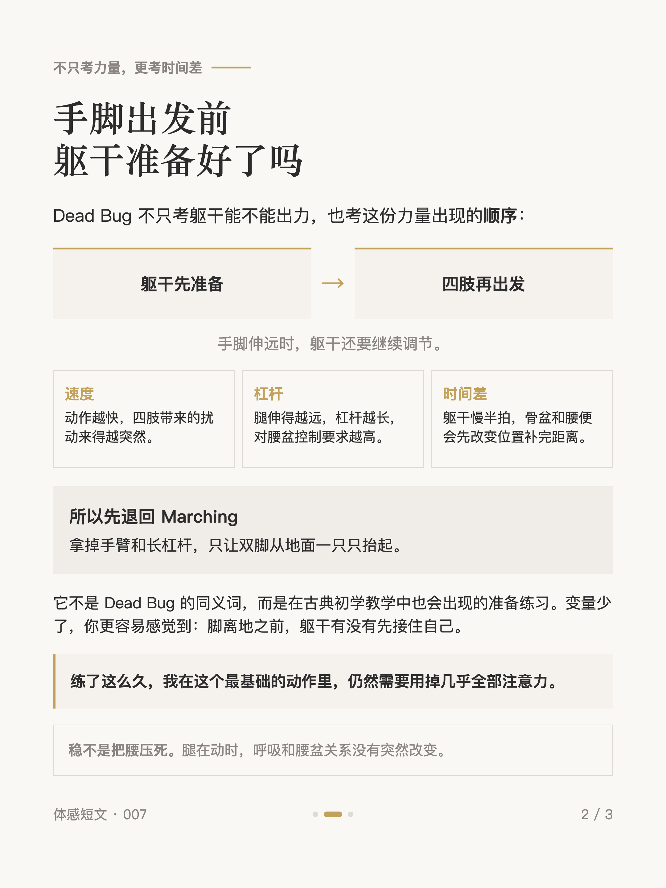
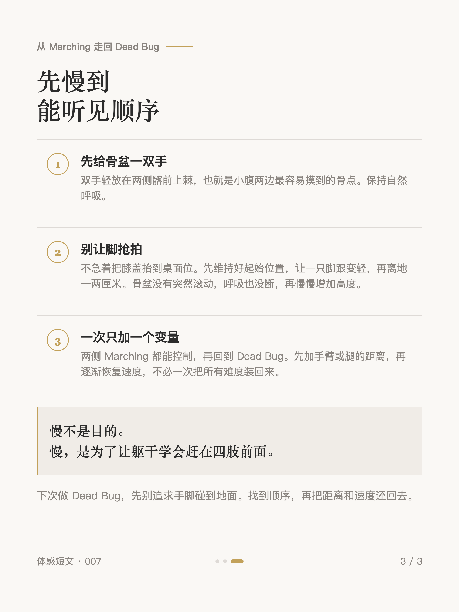

体感短文 #007
死虫式一做快，腰先拱

1 / 3

2 / 3

3 / 3
← 左右滑动浏览全部卡片 →
对侧手脚刚一伸远，腰先拱、下肋抬起——它不一定说明你"没有核心"。Dead Bug 不只考躯干能不能出力，也考这份力量出现的顺序：躯干先准备，四肢再出发；动作越快、杠杆越长，留给这份控制的余地越小。
可以先退回古典初学教学也会用的 Marching：双手摸住骨盆，让脚跟变轻再慢慢离地，顺序稳定后一次加回一个变量。慢不是目的——慢，是为了让躯干学会赶在四肢前面。